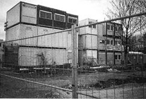
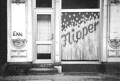
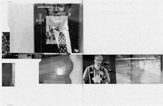
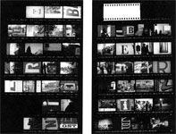
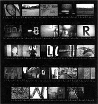
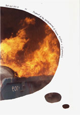

- Monday, 17th March
-
- Launch of the magazine
- Editorial
- «One Possible Scenario for a Collective Future»
by David Reinfurt - Chat announcement
- Tuesday, 18th March
-
- Open Source for Graphic Design and Publishing
Interview with David Reinfurt
- Open Source for Graphic Design and Publishing
- Wednesday, 19th March
-
- Design Equals Content
Interview with Jouke Kleerebezem
- Design Equals Content
- Thursday, 20th March
-
- «Readers and Readings in the Electronic Age»
by Roger Chartier
- «Readers and Readings in the Electronic Age»
- Friday, 21st March
-
- Further Reading
- Online Live Round Table at 6pm (gmt+1)
with Arie Altena, Jouke Kleerebezem and Harrisson
- Syndication
Last Comments
- on «
Online Live Round Table – Chat Session (archive from the 21st March 2008)
»
Term papers 04 Feb 10, 10:09 AM (gmt +1) - I don't know what to say except that I have enjoyed reading. Nice blog. I will keep visiting this blo...
- on «
Online Live Round Table – Chat Session (archive from the 21st March 2008)
»
Jouke 21 Apr 08, 09:44 AM (gmt +1) - Thank you Renee, you're right. Relations are complex and rich. The (even unintentional) Hack remains ...
- on «
Editorial
»
Stéphanie Vilayphiou 04 Apr 08, 01:21 PM (gmt +1) - Thank you Jérome for pointing that out. Actually we are making the RSS by hand since the texts aren'...
- on «
One Possible Scenario for a Collective Future
»
jerome 02 Apr 08, 05:16 PM (gmt +1) - It could be a nice purpose for an (extended) colophon: giving (deep) insights on the sources, be it techni...
- on «
Editorial
»
jerome 02 Apr 08, 04:52 PM (gmt +1) - there is one for the content at least: http://www.issue-magazine.net/rssIssueMagazine.xml the only problem...
- on «
One Possible Scenario for a Collective Future
»
j 02 Apr 08, 04:40 PM (gmt +1) - should -is/+be :) sorry...
- on «
One Possible Scenario for a Collective Future
»
jerome 02 Apr 08, 04:39 PM (gmt +1) - To me, it seems like Open Source is a much more complex process than modyfying a single car; we could disc...
- on «
Editorial
»
MLA 28 Mar 08, 12:31 PM (gmt +1) - any chance of an rss feed - for both new posts and comments?...
- on «
Editorial
»
Jerome 27 Mar 08, 06:33 PM (gmt +1) - WOW! Thanks for this gem! I (already) really liked Reinfurt and Chartier - but I didn't know about Kl...
- on «
Online Live Round Table – Chat Session (archive from the 21st March 2008)
»
Renee Turner 27 Mar 08, 04:44 PM (gmt +1) - Jouke's question of "which web" is fundamentally crucial. The web has intermingled ecologi...
- Editorial
- Alexandre Leray
- Stéphanie Vilayphiou
Editorial
This magazine is meant to be a place of discussion around critical materials, about graphic design in a broad sense, with a focus on new media.
The reason why we made this project is in a way explained through this first theme "publishing online" (and probably through all the themes we will cover afterwards). But in résumé, besides we wanted to share a certain kind of materials, it was important to us to create a place of discussion and critique. The existing platforms such as blogs or wikis don't fit for what we intended to. Either there are no possibilities to comment the content — or it is in a very general way by giving a general appreciation. Therefore the interface has been thought in order to help the confrontation of the different texts, and their discussion/critique. The different times to post the different texts has been set up in order to give enough time to read and comment each text.
This first issue is not completely as we imagined the project to be. This will hopefully be fixed within the next issue: French translation, printable version, advanced search tool, content gathering, etc. We would like the project to be collaborative, we are opened to any kind of contribution in short or long term.
Alexandre Leray & Stéphanie Vilayphiou → contact us
This project has been going on in our head since July 2007 when we learned we were moving from France to go studying at the Piet Zwart Institute in Rotterdam. It couldn’t have been made without the help of:
- – Femke Snelting, Renée Turner and Riek Sijbring, from De Geuzen, without whom this magazine would "only" be a blog, and for their strong confidence in it;
- – Michael Murtaugh for his technical and conceptual help;
- – Calum Selkirk for his tenacity to make things work;
- – Leslie Robbins for her kindness, and letting us make our interviews in Salle Demain’s studio;
- – the Piet Zwart Institute, and Florian Cramer, for hosting our website and giving us the proper environment to produce such a project;
- – Grégory Ambos, Coline Sunier and Rodney Richard for their support and advises.
 Unless stated otherwise, this website (texts, pictures, code) is licensed under a Creative Commons Attribution-Noncommercial-Share Alike 2.0 France License.
Unless stated otherwise, this website (texts, pictures, code) is licensed under a Creative Commons Attribution-Noncommercial-Share Alike 2.0 France License.
- Dot Dot Dot
- Open Source
- David Reinfurt
One Possible Scenario for a Collective Future
→ add a comment (plain text only)
This text has already been published in Citizen Designer: Perspectives on Design Responsibility, edited by Steven Heller and Véronique Vienne, Allworth Press (2003), and in Dot Dot Dot nº5 (2002).
Shortly after returning from ten days in Berlin, I found myself considering a new future for graphic design. Spring is here, the economy is shorting out, real estate is going vacant and designers are out of jobs. It seems that now is a good time for a new working method. Building on the free-formed, distributed and collaborative model of the Open Source Software movement which produced the Linux operating system and Netscape 6.0, graphic designers might openly copy, share and modify each others’ work – all for the common good. What follows in five sections of travelogue and speculation, is one possible scenario for a collective future.
→ add a comment (plain text only)
I. The Dotconomy and Karl-Marx-Allee
April 12, 2001, 10:30 am — Weaker-than-expected economic data brought another round of recession fears to the market. Still, market watchers hoped the limp data would spur the Federal Reserve to cut interest rates. Shortly after the opening bell, the tech-heavy Nasdaq composite dropped 25 to 1,874, the Dow Jones industrial average dropped 70 points to 9,942 and the broader S&P 500 was off 7 at 1,159. Retail sales for March fell 0.2 per cent, lower than the flat rate economists predicted and the upwardly revised flat rate in the year-ago period. Excluding automobile sales, sales dropped 0.1 per cent, much lower than the 0.2 per cent rise that was forecast. The figure had slipped 0.2 per cent in the previous month. In addition, the number of people initially filing for unemployment rose by 9,000 to 392,000 for the week ending April 7. This paints a much more dire unemployment picture than economists expected. They had called for the figure to drop by 3,000.
I arrived in Berlin at 09:00 after an overnight flight from New York. To kill time before checking in, I walked east down Karl-Marx-Allee from Alexanderplatz. Karl-Marx-Allee was built in 1951 as the principal symbolic promenade of the newly formed German Democratic Republic. On this very straight and very wide boulevard, the will of the new socialist government was written in architecture. Following in the footsteps of Pope Sixtus V in Rome and Haussmann in Paris, the new government inserted a ceremonial avenue which terminated in the Communist Party headquarters. Along Karl-Marx-Allee, principles of the culture were mirrored in the architecture. The avenue is wide enough to accommodate the May Day military parades and it is lined by similar Soviet modernist apartment buildings which served as workers’ housing. Karl-Marx-Allee is a showcase for socialism. Each eight to ten story building is meant as a model of society with categories of workers assigned to specific floors. Writers and artists were given the top floors.
Karl-Marx-Allee from the Fernsehturm observation deck
→ add a comment (plain text only)
From: Bob Bernard, CEO of MarchFIRST, inc.
Sent: Monday, November 13, 2000 3:49 pm
To: All Employees
Subject: Important announcement!
To all MarchFIRST professionals: We are in a situation where business needs necessitate reduction throughout the organization.
Karl-Marx-Allee was originally named Stalinallee, though that name didn’t stick. The workers riots of 17 June 1953 took place here. In response to a loss of workers to the West, the GDR enforced a 10 per cent increase in the required number of hours and daily output for each worker. This didn’t go down too well, and building workers led a massive strike on this street. The crowd marched down Stalinallee to the Communist Party offices, tearing down flags and demanding to speak with the government. Later that day, the government called in Soviet tanks to Stalinallee to quieten the crowd. The tanks were met by angry workers throwing stones. In the end between 23 and 200 people were killed and over 4,000 arrested. The name was changed to Karl-Marx-Allee in 1954. Today, after the fall of the GDR, the graffitied and abandoned pavilions that line the avenue are used as locations for Wallpaper magazine photo shoots and as temporary venues for moving parties.
→ add a comment (plain text only)
Look for the market to trend lower today and trading to peter out, analysts say, as investors take off early for the three day weekend.
The dotconomy suffered a similar fate to Karl-Marx-Allee. Poised to change everything about the way we live, love and spend our money, the internet economy required a form to match its ideology. Instead of architecture, the instrument of this new social and economic order was graphic design. From Amazon to Zoo.com, e-companies employed a relentlessly similar graphic language to identify themselves as part of the new society. The standard was a partial lozenge encircling the name set in a bold, italic sanserif typeface, and the officially sanctioned colors were orange and baby blue. Clever names were dressed in designer graphics that were moderately sophisticated and absolutely familiar. Things would never be the same again.
It didn’t last either, of course. Instead of empty buildings, the dotconomy’s collapse left in its wake a vast collection of perfectly serviceable logos, without companies to attach them to, and a surplus of graphic designers, suddenly finding themselves too numerous for the few commercial graphic design jobs now available. Perhaps these extra graphics and extra graphic designers could be re-employed in a new way. The logos could be recycled in new circumstances. The graphic designers could choose to not be offended by this.
Peace.com logo
Kozmo.com to shut down, lay off 1,100:
Online convenience store Kozmo will cease operations, lay off 1,100 workers and begin liquidating assets. Said financial analyst Vern Keenan: «This seemed like a dumb idea from the beginning».
Vacant store front on Grossgörschenstrasse in the Schöneberg district, Berlin
→ add a comment (plain text only)
II. Emerging futures
I saw groups of job trailers on construction sites all over Berlin. Each trailer contained an identical set of furnishings: a Steelcase-like desk, a padded office chair on casters, a neatly stacked pile of papers, a beige filing cabinet, a 12-inch wall clock and a pin-up calendar. The trailers were often stacked one on top of the other to form mini trailer-cities, endlessly forming and re-forming in construction sites across Berlin.
Trailers at a construction site in Mitte
Spontaneously-forming construction-trailer cities are not a unique phenomenon. When vacancies exist in an otherwise dense situation, patterns will emerge to fill the gap.
Individual decision and collective will
→ add a comment (plain text only)
Author and former Wired magazine editor Kevin Kelley has described a range of emerging systems whose collective power is greater than the sum of its parts. In Out of Control: The New Biology of Machines, Social Systems and the Economic World, Kelley discusses systems, from the collective consciousness of a beehive to the globally connected reality of the internet, that emerge from complex and loosely organised collections.
Further, Kelley has described three states of copying which have particular relevance to graphic design. The first stage of copying is perfection. This is possible when available technology can produce copies that are indistinguishable from the original (the printing press). The second stage is freeness. In a digital environment, the perfect and costless reproduction of copies is possible (desktop publishing). The third and final stage is fluidity. Duplication is perfect, free and ubiquitous. The copy can be instantly modified, reformed, reconnected and even redistributed. Fluid duplication, facilitated by globally networked computers exchanging digital data (the World Wide Web), presents a sympathetic, productive environment for a collective and non-proprietary graphic design practice.
Mr. Jarmon (CEO of Saltmine.com),
Since you preach an open door/open email type of management style, I figured I would take this opportunity to take you up on that! You see, since this is my last day with this disorganization, I decided to air my issues and opinions that typically would be aired out in an exit interview, out in the open. That way, all HR will need to do is print this email and enclose it in my employee file. I mean, what are you going to do? FIRE ME? And in the spirit of open communication, I kept it all in the family, coming from a lowly, exiting Business Analyst who has no clout in the organization. What kind of influence do I have?
→ add a comment (plain text only)
III. Flipper
I took the photograph below in Berlin on Monday 12 March 2001 at about 11:30 am. I was walking somewhere on Torstrasse in Mitte, not far from the place I was staying. It was the beginning of my week in Berlin. I had no idea what went on inside this storefront, what Flipper meant, who made this sign or how long I had been there. I just thought it looked really good, so I made a slide.
Flipper
On my last night in Berlin, I was set to go to an occasional, not quite legal bar that my American German-speaking friend knew of. The place is run by a graphic designer named Anja Lutz. Anja had started the bar on Friday nights in a vacant storefront. It is called Flipper. I was surprised and amused that it was the place that I had taken a picture of at the beginning of the week.
Once inside, I asked about the Flipper sign that I had photographed earlier in the week and received a lengthy explanation:
While vacationing in Sicily, Anja had seen modular plastic systems used to shade and protect storefronts and shops. She thought that these plastic pieces would be easy to track down. Not quite. She was sent from store owner to store owner trying to find the plastic clips, with each shopkeeper saying he didn’t have any, but knew another shop that certainly did. After being sent from one place to another, she was told that she could definitely get them from a certain shop across the water. It was getting late in the day, and she had to take a ferry to get there. When she arrived, the shop owner had some, hut only in green, yellow and white. That was fine, and she loaded up. The shop owner told her that the last ferry left in ten minutes, and if she missed it she would have to spend the night there, so he drove her to the dock and she just made the boat as it left. Returning to Berlin, she combined the individual plastic pieces to make the Flipper sign, without a clear purpose in mind. Later, when the possibility of using this empty space came up, she adjusted the Flipper sign to fit the window, and opened a bar.
→ add a comment (plain text only)
In addition to running Flipper, Anja Lutz edits and art-directs a collaborative publication called Shift!. The thirteen issues of this always-changing project seem to embody the spirit of a non-proprietary and openly collaborative graphic design practice. Issue number 10, Double Take, is particularly appropriate.
Cover and spread from Shift! 10, Double Take
This issue is a «photographic experiment combining the convenience of global communication with happy snapping. The contained images are the result of recording the day, by shooting 180 shots, one every 20 minutes from morning to night, then rewinding the film and mailing it to a distant friend who is asked to repeat the process. Over one hundred individuals from around the world exposed around 1,800 frames.» «Double Take» asked the contributors to consider their contribution as nothing more than an incremental step which would be altered, and maybe improved, by the next contributor.
Can you imagine graphic design employing this method in wider practice? I can, but it will require a fundamental change in designers’ mindsets. No longer will the designer be the sole author of a unique solution for a discrete problem, but instead we will be free to explicitly adopt other designers’ works to fit our own needs. And we won’t even need to conceal this reality. Conversely, we have to accept that what we have done ourselves is subject to modification by any other designer. Can we stand it? I think so.
→ add a comment (plain text only)
IV. Open Source Software and Sharing
The Open Source Software movement provides a solid model for a future practice of graphic design. Open Source Software preaches a gospel of open collaboration and sharing for the collective good. The basic premise is that software can be made by a group of dispersed collaborative individuals more effectively than it can be by an individual or a tight team, and that free software is inherently better than the commercial alternative.
When a consumer buys a piece of commercial software, they are only getting a license to use it. They might be surprised to find that they don’t own the source code which determines how the software works. Technically sophisticated users often want access to modify, fix or add to the software. They want access to the technology because that is where the power resides, otherwise it’s like buying a car with the hood sealed shut. Writing in the New York Times (29 September 2000), Peter Wayner compares the individual altering their Linux operating system to a concrete precedent: «They’re using the source code in much the same way that Bo and Luke Duke welded a few enhancements to their car in the television show The Dukes of Hazzard.»

Peace, Love and Linux logo from a recent IBM ad campaign
- jerome 02 Apr 08, 04:39 PM (gmt +1)
- To me, it seems like Open Source is a much more complex process than modyfying a single car; we could discuss at length what it represents to "organise" the work for developpers on really large projects such as Linux (reading the Cathedral and the Bazaar, By Eric S Raymond should is a good start) but it is maybe simpler to continue with the metaphor: it would be more like harnessing, modifying and customising the factory which produced the car.
- j 02 Apr 08, 04:40 PM (gmt +1)
- should -is/+be :) sorry
→ add a comment (plain text only)
The Linux operating system is one of the best known and most successful examples of Open Source Software engineering. In developing Linux, the widely distributed participants adhered to the following four rules (posted on www.GNU.org):
The principles of Open Source software are listed as Four Freedoms. 1. The freedom to run the program, for any purpose. 2. The freedom to study how the program works, and adapt it to your needs. 3. The freedom to redistribute copies so you can help your neighbour. 4. The freedom to improve the program, and release your improvements to the public, so that the whole community benefits.
Could this be a model for a new type of graphic design practice? An Open Source design where ownership and authorship are explicitly negotiated and shared?
An Open Source model for graphic design draws its power from the collective, and like any collective, the only way to enact it is by the individual. The decision to embrace an open and non-proprietary method of working, perhaps allowing your brilliant and original ideas to be marginalised in the context of a collaborative product, can be balanced by the possibility of developing someone else’s ideas without the added burden of cloaking them in your unique style.
→ add a comment (plain text only)
Berlin-based graphic designer Prem Krishnamurthy has employed a similar method in his «B-E-R-L-I-N (everyday tourism)» project. Prem invited willing Berliners to become tourists in their own city. He outlined a simple task expressed as two instructions:
1. Shoot a roll of 24-exposure film on a single day in Berlin. 2. Include six pictures, in each of which a letter fills the frame, these pictures may be spread throughout the roll, but must consist of the following 6 letters in this order: B-E-R-L-I-N.
Each roll of 24-exposure film printed directly to a contact sheet records one person’s day spent photographing the letters. By relinquishing control over the set of artifacts (contact sheets), the designer has opened up possibilities within a clearly prescribed framework. The resulting contact sheets begin to make legible multiple experiences of B-E-R-L-I-N.
 Contact sheets from Prem Krishnamurthy’s B-E-R-L-I-N (everyday tourism)
→ add a comment (plain text only)
Graphic designers already tend to be their own best audience. Designers have a rabid interest in the work and details of other designers. The idea of Open Source Design would harness this interest, to bring graphic design to a completely new place. Designers copy each other’s work all the time anyway. Why not use this for the collective good?
I am not suggesting a radical realignment of the entire profession. This would be antithetical to the spirit of the Open Source movement. Rather, it must be a personal decision to relinquish ownership of your own work, then to proactively and unabashedly copy the ideas and styles of other designers and, in doing so, assume a responsibility to improve upon, add to or shift their original meaning. With luck, another designer might see your work and copy it as well. Perhaps the design might even return to be used by you later on a different project in a much-altered form. And, in evaluating work, it becomes the Open Source designer’s responsibility to gauge the work in the context of all or some of the others from which it directly and explicitly borrowed partial or complete ideas.
During the week that I spent walking around Berlin, the spirit of open collaboration and sharing was tangible. I saw the headquarters building of GSW, the former East German state housing authority. The facade of the building changes throughout the day, and with the weather, as each individual closes or opens their brightly coloured louvres to create a collective, shifting pattern.
GSW headquarters building facade in different states
- jerome 02 Apr 08, 05:16 PM (gmt +1)
- It could be a nice purpose for an (extended) colophon: giving (deep) insights on the sources, be it technical, theorical or 'simply' visual and practical. We recently had the chance to use such space to disseminate information about the work when we worked with Gasworks, for the Disclosures seminar (http://gasworks.org.uk/exhibitions/detail.php?id=344) and gave credits to the åbäke, Francois Rappo, B&P Foundry as well as the people more or less directly involved in the work.
→ add a comment (plain text only)
V. A Model
On 3 April 2001, the New York Times reported that Massachusetts Institute of Technology (MIT) was trying an Open Source model with their course materials:
Other universities may be striving to market their courses to the Internet masses in hopes of dot-com wealth. But the Massachusetts Institute of Technology has chosen the opposite path: to post virtually all its course materials on the Web, free to everybody. MIT plans on Wednesday to announce a 10-year initiative, apparently the biggest of its kind, that intends to create public Web sites for almost all of its 2,000 courses and to post materials like lecture notes, problem sets, syllabuses, exams, simulations, even video lectures.
MIT is a hotbed of the Open Source software movement, so this makes sense. However, it is the only university that is attempting anything close to this model with their course materials and the Internet. «And ultimately,» said the MIT representative, «there will probably be a lot of uses that will really surprise us and that we can’t really predict.»
Coincidentally, MIT has taken a similar approach to the graphic design of their main website (www.mit.edu). According to Suzana Lisanti, Director of Web Communications Services, «the home page reflects the diversity of interests in the MIT community with a changing header graphic.» The main identifying MIT logo on the institution’s home page is a graphic solicited openly from anyone in the extended community and it changes every day. It’s hard to imagine a large corporation taking such a radical approach to its graphic identity, but this makes perfect sense at an institution deeply committed to Open Source.
MIT’s constantly evolving, reconfigureable and fluid logo is a prescient example of the possibilities for an Open Source graphic design practice. On the webpage «Graphic Guidelines for the MIT Home Page», Ms Lisanti provides a checklist for website logo submissions. This listing of practical concerns includes the following instruction, which concisely summarises the nature of an open and collaborative graphic design model:
Graphics should elicit surprise, laughter, or delight. (Other reactions may be equally acceptable.)
→ add a comment (plain text only)
- Print on demand
- Open Source
- David Reinfurt
- Alexandre Leray
- Stéphanie Vilayphiou
Open Source for Graphic Design and Publishing
→ add a comment (plain text only)
Interview with David Reinfurt, done via Skype Audio, on the 20th of February 2008.
David Reinfurt is a graphic designer based in New York; since a few years, he’s been working with Stuart Bailey under the name Dexter Sinister. Through Dexter Sinister, they publish materials more or less linked to visual arts through alternative modes of distribution. For example, Dexter Sinister’s studio is from time to time a workshop or a library. They also use print-on-demand systems to print and distribute books for specific and rather small events.
Besides this publishing activity, we were really interested in interviewing David because of his great interest in Open Source thought as we can see in some of his articles.
- IssueMagazine
- We thought about interviewing you because we appreciate your work as a designer but mostly because you seem very much concerned about the new media, alternative ways of publishing and Open Source philosophy.
- David Reinfurt
-
So maybe it’s a good idea to talk about this kind of overlap of the traditional publishing and the electronic or online context.
I’ve been working on a website for a couple of years which address some of these issues. It is the library part of the Dexter Sinister website (see the article «A Short Account of the Library»). This is a bunch of pdf that we’ve been publishing, releasing over the course of the past three years.
→ add a comment (plain text only)
- IM
- Like all these pdf files you put on the Dexter Sinister’s website, you have found alternative ways to publish and broadcast often in a very generous way. When and how did you start thinking about these ?
- DR
-
To the idea of publishing, just being generous or any of the kind of web things that I’ve worked on being generous is very much the spirit no matter what you’re publishing. So if you’re publishing books, if you’re publishing a magazine, if you’re publishing things on a website, I think almost every time it’s in the spirit of being generous. Because if you’re publishing books, the money you’re making with it or the time and effort that’s required don’t ever add up to be anything that isn’t sustaining the activity. And so you have to do it because you simply want to release some information, because you have something that you want to get out to the world and that they’re things that you think that other people would be interested in. And I think that’s where the generosity comes in. I think there are a lot of situations where people have specific things they want to say, they’re often might be called an agenda or something else. And there are a lot of various platforms to which that kind of publishing activity happen. There is of course a whole tradition of small and thin module publication that exist in that way, but in another case where you have material that you think that other people may like to read, or you completely believe that you have things that are worth sharing, then the kind of publishing involved is a little bit different. It’s not really so much that you feel the burning desire to publish, it’s simply that you feel the desire for that material to be out in the world and to be available.
I think there’s a difference being like, let’s say between a blog where it’s one person offering a kind of conversation that is necessarily revolving around an interactivity and those kinds of things, and with something like the project Gutenberg, which is an online collection of electronic texts that are scanned and OCRed (Optical Character Recognized) by people who are contributing to this project, simply because they believe that things like, for example, literature from the nineteenth century, should be available to everyone. And that’s a kind of generosity that I really love, that I admire in all those kinds of projects, and that’s what drives me to want to publish things or be involved in that.
But the difference that I would make there is: that project is not that much about who’s publishing it, but it’s about simply the desire to make the material available because you believe that other people want to read it, want to have it, want to deal with it. And I think that’s the thing, especially online, it would seem that thing made include a little bit of spirit, but I think it’s important to identify that spirit which is made. And so the difference between offering things, because you completely believe that other people want to read them and will read them versus offering things because you want to publish your point of view or something else. But I also think it’s not that the script or courses of some part involved in any publishing act.
→ add a comment (plain text only)
- IM
- Since you’re talking about the web, Dot Dot Dot doesn’t have a «real» existence on it. Although it’s specified on some issues that anyone is free to reproduce the articles without the authorization of the publisher, we wondered why the magazine doesn’t have an online version of the texts, maybe with different means of publishing. We are convinced that the print version would still be meaningful and a commercial success.
- DR
-
I think it’s always a matter of figuring out what kinds of materials get distributed to what kind of channel. Dot Dot Dot because of the nature, of the way we think about it, because of the link of the articles forms a kind of post-reading that we want to posture with it, it only makes sense as a printed medium. That’s mostly to do with the fact that we want it to be a kind of theme as a whole, so one article very much leads onto the other, so we think of it more like an album rather than a collection of individual songs. In one way, it is important to mind it printed, because that thought use a completely different kind of reading, a different kind of relationship to it, a different way to travel around the world, a different way to be online. It would be online but it’s always things that make sense, or in fact, the number 13 includes a piece of the website of Seth Price, an artist in New York who’s really interested in, and that’s a very interesting thing that kind of thinking about modes of distribution in the way publishing happens at different sites and telling a complex work. So Seth made a piece of an already published version which is a text about distribution of our work in catalogues, in the late 20th century context. And that article excerpt first as a pdf — the pdf would have been very important to include in the magazine, but in the end we decided, we wouldn’t print it, because it would be so unauthentic to what he would be doing and we simply quote/represented the cover page, and we put the link to the pdf that we have posted on the Dexter Sinister website. And there’s a crucial decision there because when Seth put the pdf, it was always quite a changing: he was always working on a new version. So he put it down the printed form that completely belonged to it. So I think it has just to do with the material itself or how to do it.

Dot Dot Dot nº13, cover
→ add a comment (plain text only)
- IM
- You have worked with the Print on Demand systems. Why did you choose such a system, and what are the pros and cons of it? You made Lab Magazine which is an internet-based project and Primer, on the Future of Art School. Did you think both publications with a different approach, because one was meant to be downloadable and the other one was meant to be directly printable with Print on Demand?
- DR
-
Print on Demand-like largely we’ve been doing at Lulu which is like a print on demand project, that happened to be who we’ve used for all the projects that we’ve done this way. But I just want to say that the choice to print in this way is always a practical choice.
So for example with Lab Magazine, the idea from the beginning was Adam Pendleton’s who originated the project. The idea of Adam was to collect a series of pieces of articles, and they would each be pdf. But however he thought it was very important that thing also goes to bookstores, and he was thinking primarily that for New York where they can distribute it. But he wanted to have it visible in bookstores as well because as an artist it was important to him that the project was a magazine in one way or the other. And so, I think that tension between the kind of pdf thing, the primary form, like he thinks of it as a collection of pdf — that gets collected and printed at different times and that is slightly different each time it’s printed — that was the part of the project he would like to be there because it’s a way to think about a magazine or that format as something that’s constantly changing and being a collection, a kind of repository, a kind of thing he’s interested in or people he’s talking to, or these kinds of things.
So I guess, with Lab Magazine, the major consideration of whether it’s printed or not was simply that by printing it on demand, and printing a few copies, having it changed during the different times when it’s printed allowed that tension that comes forward of the fact that it’s really a bunch of pdf with the fact that it’s printed this time, printed that time, printed that other time… So that’s why it was printed on demand.
One more thing I would say about Lab Magazine, at the launch of the magazine, they also had an inkjet/laser printer corner set up and you could go over and print out anyone’s pdf that you wanted to view in the magazine and it was free.
→ add a comment (plain text only)
- DR
-
The Primer, On the Future of Art School was printed on demand because it was made for a conference, a symposium that was being organized in Los Angeles by Stuart Bailey and Frances Stark. It was a small conference, there were maybe one hundred people who were art teachers and attendants. And so they thought very much they wanted to have a series of texts that everybody who was attending could read and so for the one hundred copies the only way to make sense to print it was either to make it laser printed or it turned out it was a bit more efficient to simply printing it on demand. Then we figured that at the same time we could have it for sale in shops and distributing sites. So in that case the role of the pdf part of it was to offer it for free, but then they sold the printed version just for the printing cost, then no money was made. So in that case, I guess it’s just a matter of, again, practical consideration, that they just wanted to have it available right there along people talking in the conferences and making reference to it. And they could have made it look different to each one but it would have been too much work…
→ add a comment (plain text only)
- IM
- In your article in Dot Dot Dot nº5, «One Possible Scenario for a Collective Future», you said that graphic design could be used, modified, augmented in the same way of Free Softwares are. When and how did you get concerned by the Free Software movement and the Open Source in general?
- DR
- That idea in this article has been floating around in my head and work for a long time before that and continue to kind of inform a lot of the things that I do. So what I was writing about design perhaps being augmented or added to, or a kind of a re-purposed and re-used is something I’m always interested in and not because of a kind of state of having everything accessible all the time that we’re very much moving into that right now — the Internet being kind of the perfect example of that. But you have access to a non-stop kind of wealth of material and I think a useful response to that is not necessarily make more things, but more often to re-use the things that have already been made and so you see this kind of spirit in the way we edit Dot Dot Dot, where we’re often republishing articles that other people printed. We think that it’s very important and useful to do because by putting it in a new context that article is read differently. It’s typically with re-using for example logos or graphics or whatever. I could give the example of the Manifesta 6 created by Mai Abu ElDahab, Stuart Bailey and I. Together we had designed a badge which is the shield that’s on the Dexter Sinister website. That shield was originally designed for Manifesta 6 by Mai Abu, in a contemporary art school. And once that project was cancelled after that year of working on it, we thought it was a good idea to continue to have that shield, to continue to use it because it’s better than making something new, for example to put it on a website or whatever. It had the added value that it had been used before so it has some sort of history or a connection to it, and then its meaning is more complex than simply standing for the Dexter Sinister or something else. It kind of stands for Manifesta 6, it kind of stands for the canceling of that project, it kind of stands for Dexter Sinister coming out of the canceling of that project. And I love that one thing having a more complex setup, a more structured root to what they mean, rather than they were directly made out in there. In that way I always like things that are re-used. It’s quite quicker, simpler and easier.
→ add a comment (plain text only)
- IM
- With the spreading of computers and tools of production, the designing tools are accessible to a broader public. What do you think of the place of the amateur in the field of graphic design? Amateur not in the sense of being non-expert, but as a passionate. For example, wikipedia is written by anonymous and non-experts, those people are amateurs by being non-professional, they’re just passionate by the topic they’re writing about.
- DR
- I think the place of the amateur in graphic design is already pervaded. You can just look around in any number of range of people who studied to be experts or qualified in graphic design, so you can just look around in the world and see how many different kinds of people are doing graphic design, and how different their activities are, and how different their «qualifications» are. And I think that’s great of course, I hardly support and enjoy it because a lot of the things that I wanted, that I’m involved in, or have been involved in come with a kind of glad thing of being amateur. So when you’re writing, but not everything is at stake in your writing perhaps, you’re more free with the kind of writing that you do, because you say or take the claim of being an amateur at least in some way. And I think the way we are working graphic design have a particular affinity for working that way from what I’ve seen. Because we’re always working on projects, on public matters that we’re not expert in, there are always public matters or things that we’re not expert in. But you make connections to it by working on it, by producing a book, or producing a website or whatever and so you’re getting interested. And so I think the role of the amateur is crucial in order to give yourself new ways of producing things that you want to make.
- didier lechenne 18 Mar 08, 10:32 PM (gmt +1)
- I totally agree with your point of view, but… This magazine is done by experts, you are yourself an expert (and it's why I want to talk with you), I am an expert (to find the address of this web site). I think that we all need experts: in politics, architecture, in the media. What would the world without the artists, designers, theorists? Last week, on the French/german TV channel Arte, I saw a documentary about "Monsanto". The editing of this documentary was particularly interesting: all the information off the film come from the web: all those connected to the Internet would be able to edit this documentary. Except that, we must have a commitment to realize this kind of tv program. I think that the issue of open-source really has to do with the issue of 'public space', in France we have a term for this 'utilitée publique" (which has been very poorly communicated and used). This is, realy, an "political" issue . Question: Do you think it is really possible to pay my rent, my bicycle, my car, my books with an economic model to zero euros? We need experts...
- Issue Magazine 20 Mar 08, 05:28 PM (gmt +1)
- Thanks a lot for your comment. We couldn't expect better than the first comment being made by a French graphic designer as digital media is quite neglected in France… The question of remuneration has always been a problem. But Open-Source doesn't necessarily mean money-free. In the field of computing, a lot of companies made their fortune by opening their products, like MySQL (databases management) or Ubuntu (linux distribution). It's an alternative to the economic model we are used to. One of the questions we didn't cover here are: – Does the open source interest for graphic design concerns the tools of production and/or the process of creation? – Is there a link between them? To come back to the status of the amateur, we mentioned it in the latin meaning (from amore "to love"). The amateur is demanding; s/he can live in a capitalist society (but not ultra-liberal) as far as you don't try to sell her/him formated products. The amateur is not only a consumer, but is also a producer and so contribute to the world s/he is living in (see Jouke's interview on the difference between symmetric/asymmetric internet connections). We made this magazine as amateurs, not as experts.
- Jouke Kleerebezem 21 Mar 08, 02:35 PM (gmt +1)
- To discuss the value (methods and meaning) of educated, informed, concentrated, innovative, even creative intervention -- be it professional or not -- beyond the traditional amateur/expert divide, is crucial for the development of knowledge, experiment and visual excellence in (networked) media. Desides it stands firm that still the bulk of the web's content was put together, published and is maintained as a labor of love: non-institutional, non-funded, non-commercial. Ownership remains with the authors, unlike most of the mass media's 'reality' products.
→ add a comment (plain text only)
- IM
- Would you like to add something?
- DR
- A lot of things that you were talking about seem to be hovering around the «breakdown» into what graphic designer’s law or discipline involve. And that breakdown happens with even more intensity when you’re going to an online context because of course. For example, programming websites and writing the things online and posting the things online and deciding what goes on and what goes in, what it looks like etc., and those kinds of blurring of role or activity are actually exciting and energizing moment. So I think the best way to address those kinds of issues is to actually making projects like the thing that you’re making now, to put together a magazine which deals with these issues. So in some ways, you’re writing a book about writing a book. And so that kind of like sitting, that practice, that putting those ideas into practice rather than simply describing those ideas. I think by putting them into practice, actually making something that demonstrates the idea is a very productive way of talking about it. I think that’s the strong part of what you’re going to do but also I think it underlies a lot of the things that I do for sure. I’d rather not talking about it, I’d rather simply make things, try to model a certain approach.
→ add a comment (plain text only)
- Author's Authority
- Filters
- Self-publishing
- Design Skills
- Jouke Kleerebezem
- Alexandre Leray
- Stéphanie Vilayphiou
Design Equals Content
→ add a comment (plain text only)
Interview with Jouke Kleerebezem, done via Skype Chat, on the 12th and 13th of March 2008.
Jouke Kleerebezem is very hard to present because of the multiple activities he has done: design, art, curating, writing, publishing… He was also advising researcher until 2006 at the Jan van Eyck Academie, notably setting up the Ubiscribe project. He has been strongly engaged in Internet and new media since 1994.
We first knew about him for his excellent and harsh critique of the First Things First manifesto, and then his writings concerning the Web, blogs, etc.
He now lives in Burgundy in France, restoring an old manor to transform it into a publishing artist's residence.
- Note on the title by Jouke Kleerebezem
- For anything the (graphic) designer does let's not forget that it provides «content», in and by itself. Every bit of information that is put before a public, any publication, is «informed» by design decisions. Design is an editorial activity as much as proper text and image editing is. With that concept in mind designers and artists get fully involved in the communication and interaction which they support. Design-as-content can never be stripped from the prime content which it visualizes, or from the interaction which it is supposed to facilitate. It works in sync. But its added value can be critiqued, it can be tested against other ways of visualization, and against other editorial interventions. Only if artists-authors and users-recipients consider design content (interface and interaction design), we might get to understand where new media publishing could take the infinite abundance of contemporary issues.
- IssueMagazine
-
You asked us by email if we knew about the content gathering system of Mute magazine. To answer your question, we didn’t know that Mute magazine offered such a system. We heard about POD with services like Lulu, or with publications like LAB MAG or Primer, on the Future of Art School. Mute magazine goes further by giving the possibility to collect articles and to make your personal publications. In this sense, It’s very close to what Netvibes does with RSS.
One of the questions about content gathering that came in mind is about filters in the knowledge diffusion. Umberto Eco was asked about this during the virtual symposium text-e.
«Gloria Origgi: When asked, in varying contexts, about the possibilities and risks of Internet, you have often evoked the problem of filtering information.
Umberto Eco: It is the fundamental problem of the Web. The whole of the history of culture has consisted in the establishment of filters. Culture transmits memory, but not all memory: it filters. It filters well, or badly, but if anything that has allowed us to interact socially is the fact that we have had all of these filters.»
Do you agree with him? Do we have to invent new filtering mechanisms? What could they be?
- Jouke Kleerebezem
-
I made a distinction between filters and lenses, filters «sifting» information and lenses «distorting» it. My best filters have always been other people! So I would turn the Eco argument around, if he says : «but if anything that has allowed us to interact socially is the fact that we have had all of these filters», I would think that how we act socially has filtered our information, idea of culture etc.
Filters sift information, they divide between what passes and what not. Filters are like a sieve. Lenses do a lot of other things, they focus, they might distort, they bring close what is far away or the other way around… I think for information access we need both. The idea of the (social) network is that it brings together people (or «recommended» data) who might help one another to filter and focus, I think.
- IM
- Does that mean that lenses are interpretation, and that it’s out of human, whereas filters are automated?
- JK
- For me both are «human» as I have learned most from human recommendation pointing me at information/knowledge I would like to know/have. Even if I can clearly see what kind of lens is distorting the image that is presented to me: in the case of Art it is clear that I like to a see a lens working for me. Then filtering also involves human activity, if only when someone posts/publishes some information that I can later on «automatically» find (google).
→ add a comment (plain text only)
- IM
- So it becomes a question of authority… Traditionally there are people who are socially recognized to be competent to filter (even if, as Eco said, they can be no competent at all). In social networks, is everybody on the same level?
- JK
- Authority has been replaced by reputation? In a social network in principle everybody is on the same level but some are more on the same level than others (to paraphrase George Orwell). The main individual goal being to learn, the main shared-social goal being to get and stay on the same level with your peers. In order for participants in a group to learn from another, and the group to learn from other groups. (I explain a lot of things from a learning point of view, as you can tell.)
→ add a comment (plain text only)
- IM
- Is the problem located in the common knowledge. If, for example you get information on Netvibes, a gathering information platform, you can select only what you want to see. If you buy a newspapers, even if you don’t read all the articles, you can see all the titles.
→ add a comment (plain text only)
- JK
- I totally agree on that problem! Neal Stephenson in The Diamond Age (read that book if you have not already!!!) writes that the people in power share the same information (the same Times newspaper), while the other people (only) have their customized versions and get to read whatever (they think) they like or need to know. Common knowledge is a big problem… only to be solved in offering people (stimulating people to have, or even demand) a rich information diet. We have to learn to focus and filter all over again! But that is what Eco says. I only add the focus… we live in the Age of Attention (or lack of it). The idea of the Age of Attention was strongly discussed in the late 1990’s by several people, I remember a Goldhaber, I presented the Republic of Attention (as opposed to the Information Society) at a conference.
- Issue Magazine 19 Mar 08, 08:07 PM (gmt +1)
- The Philosopher Bernard Stiegler is very interested in the notion of Attention. You can find Podcast (in French) or texts (French, English) at http://www.arsindustrialis.org/activites/podcasting
→ add a comment (plain text only)
- IM
- We could shift to one of your most frequent activity: self-publishing.
- JK
-
OK self-publishing! More filtering and focusing!
Actually I have reduced my self-publishing rather drastically after 7 years of NQPaOFU… The past three years I published to a small reader group of only 3 readers — who themselves publish too. - IM
- Is this the Ubiscribe project?
- JK
- No the publishing which is ongoing is really private? or public in a limited circle?… ha! One good thing about self-publishing is that it can almost be one-to-one. Weblogs are many-to-many, at least the WWW1 LANHAM, Richard A., The Electronic Word: Democracy, Technology, and the Arts, The University of Chicago Press, 1993 has found its true destination there. Between many-to-many and one-to-one I see self-publishing navigating. Who would have thought 10 years ago that blogging would be all the rave? In early 1990’s «web-for-one» and private web servers were expected.
→ add a comment (plain text only)
- IM
-
In the article «InfoEnclosure 2.0» in Mute, the authors say Web 2.0 is many-to-one — this is a personal interpretation.
«The hype surrounding Web 2.0’s ability to democratize content production obscures its centralization of ownership and the means of sharing.»
« it can be said that Web 2.0 is capitalism’s preemptive attack against P2P systems»
«The mission of Web 2.0 is to destroy the P2P aspect of the internet. To make you, your computer, and your internet connection dependent on connecting to a centralized service that controls your ability to communicate. Web 2.0 is the ruin of free, peer-to-peer systems and the return of monolithic ‹online services›.»
- JK
-
Sounds a bit paranoid to me but I might lack the proper technical and economical information. I hope for a web which «routes around censorship» and other such limitations. It should also route around limited interest bundling, like in online services. At the end of the day capital industry and politics will increasingly depend on the citizen’s wishes and interests. Maybe there will be a balance, we’ll see. But I was trying to react to the first quotes.
From an independent personal publishing philosophy, and need, indeed I would not easily supply my publications to an «online service» to start with. I am in favor of personal, individual web servers, domains, sites and other content gathering, analyzing and distributing possibilities. An early critical question concerned the different speeds for downloading and uploading, much more important than «bandwidth». As long as there is no symmetry, people are primarily considered consumers not producers of information. That I believe is a big mistake, whoever makes it, and we are seeing this proven in the enormous production of content by «common people» — not only on the web but also in mass media.
→ add a comment (plain text only)
- IM
- Can you describe more this personal project you were talking about, or is too private? If you don’t want to, we are very interested to talk about your IDIE (Innovation and Design for Information Empowerment) project.
- JK
-
The publishing project I refer to is a personal thing, but i can tell some things about it. For me the most beautiful about it is that it turned readers into writers! First I addressed my writings/images to a limited readership, who then also started to publish… I have been working in situations as an editor where it was rather hard to get people to write for their institution’s websites or such. This came natural.
IDIE was born out of frustration with the FTF2000 manifesto… It sounded so boring to me while myself, at the time, I was so excited about the new publishing-networking possibilities of the Internet-web-new media, which were no part of the FTF2000! How could that be left out of the discussion?!
→ add a comment (plain text only)
- IM
- It’s actually one of the reason of why we are making this project, and then we discovered IDIE…
- JK
- I hoped IDIE would be noticed in that way :-)
FTF2000 was so old fashioned! - IM
- Of course, it was from 1964 !
- JK
- Cut and Paste 1964 to 1999! Where’s the avant-garde when you need them? While it would have been really interesting to anticipate the changes at hand to re-write the 1964 manifesto.
→ add a comment (plain text only)
- IM
- You wanted IDIE to be a collaborative platform to write critical texts about graphic design. But it seems like you were actually the only one to write on it. Do you think it’s a matter of platform, tools or rather a lack of concern from our graphic designers fella?
- JK
- But it did not happen. Graphic designers even if they want to change the world are cliché thinkers? (Sorry that I cross posted but is partially an answer to your question)
- IM
- We’ll have to censure that but we think yes !
- JK
- :-)
→ add a comment (plain text only)
- IM
- What do you think of the current places to discuss graphic design? Dot Dot Dot, Eye, †Emigre, Design Observer, Speakup… Do you think they are clichés as you said before?
- JK
- At the time with IDIE I did not provide a platform. My mistake. Then, it seems that — indeed at least in FTF2000 — cliché thinking reigned. Now… for the sources you quote, I think we hit on the same as we discussed above: Common Knowledge, Attention, Preference… media and thinking/publishing circles should not claim to be «common» anymore. We live in, and work in, and revolutionize niches.
→ add a comment (plain text only)
- IM
- (Graphic design seems to be very self-centered, and you can feel it through production and writings.)
- JK
-
Indeed these sources do not claim to revolutionize more than their aficionado’s thinking. While ideally the designer camps with his-her audience, in a limited, modest way, at the same time we all miss the idea of «massive change» for all people, for the common good, for causes bigger than our private attention.
Last night i saw on Arte «La vie selon Monsanto» and — apart from the extensive Googling which was performed — that really touched upon issues on a world scale: in the delusive words of the company: Health, Food, Hope!
The old question arises, whether we should engage as citizens, or as professionals? I like to think we can bring our professional knowledge to engage in a civic cause… and so do others who we then learn from.
Like you had «embedded journalism» in the Iraq war (no good journalism) we could think of «embedded design», to turn it in a good sense: as design within a community, as a service, as embodied knowledge, something like that. «Service» is, like Attention, another difficult issue when you use it as a lens on graphic design… how «serviceable» is design, or is the designer?
My idea about it would be indeed more like a service at the benefit of a user community of which the designer is a participant. A user community in which s/he would benefit from other members’ knowledge or vision and vice versa. Like a company’s design dept. But in a peer community. At some point I even got to imagine the designer as a channel but I did never work that out.
→ add a comment (plain text only)
- IM
- It sounds possible to apply it in a P2P media as internet, how could it be in print design ?
- JK
- Mind you, I am totally against any heroism… from the designer’s part as much as from anybody else’s! That’s what put me off in Bruce Mau’s «Massive Change». To me the challenge would be to take on that position or role in any medium. But I wonder if you could realize it if you are not among the community that you are embedded in… physically I mean.
→ add a comment (plain text only)
- IM
- Could you explain us this notion of the designer as a channel because the term «channel» is related to classical communication theories?
- JK
-
Theories yes, we need practices too! I’ll give it a try, but it was a fantasy not followed through.
For the designer as a channel I imagined him/her to organize his/her practice on the basis of personal interests and urgencies to start with. In these fields s/he could collect material, build a «knowledge base» — as an editor — which would attract interest groups or individuals interested, who would sort of organize themselves around that pool of knowledge, contribute to it. The designer would be like a classical publishing house with a catalogue of issues. Of course s/he would interact on the basis of professional skill and knowledge with the interested/interest groups which would acknowledge the «channeling» concept. It was a fantasy… which could work.
Mute does so in a sense, also developing tools, platforms… but not offering any design expertise. True design expertise is lacking from a lot of platforms!!!
→ add a comment (plain text only)
- IM
- Design skills like?…
- JK
-
Editorial organization; lay-out; readability; image-word complexities; media literacy… We can go on about such «design skills».
They have come to include many more options than before… and maybe lost one or two in the process. It would be good research to analyze the designer’s responsibilities, possibilities, expectations and what is expected from them, like in 1964 and in 2008. The 1960s and the 2000s. See Abraham Moles’ text «Du design graphique»
Design skills might have expanded but are nevertheless not generally excepted as conditionally important in communication and information exchange. The designer is still considered an artist, or an engineer.
→ add a comment (plain text only)
- IM
- Isn't there an in-between, or should we use another term, another definition?
- JK
- Who needs artists or engineers in their daily communication and information habits? I mean: that is an old problem, how would we consider it in new media, and platforms. We’re back with FTF2000. I guess if we look at individual practices we would find occasions of «betweenness» and maybe even entire practices of designers who manage to stay in between mode.
→ add a comment (plain text only)
- IM
- In the Avant-Garde movements, there were a lot of «total» artists dealing with art, design, architecture… It seems like it disappeared then, but today, some designers have also an artistic practice — clearly separated from their design activity. Like you are an artist AND a designer…
- JK
- Actually i think there is in art and design (critique) too little attention for the subtleties and intricacies of individual practices, relationships between designers and those who they work for/with, their design principles and philosophy, «what they actually do» etc. So one would take a close look at how artistic and design decisions are taken and how they are perceived… wasn’t that called «close reading» in literary criticism?
→ add a comment (plain text only)
- IM
- Can you talk more about Mute magazine?
- JK
- I think Mute is doing a great effort in combining all of a publishing-writing practice in one «organization», including economics and issues of efficiency and sustainability. Using importantly the possibilities of a «social network» and expanding it off-line to where the actual PoD magazines will go, physically. Mute to me performs like an experimental publishing house. One thing with the all-over availability of information is that there is little editorial guidance. Like we discussed when I mentioned Diamond Age. (Traditional) publishing houses but also open communities act as «filters», which an individual might feel comfortable with or not. If so, you adhere, contribute, participate, enhance the community’s pool of knowledge. There is no authority but reputation at work. Building a reputation to me was also at the basis of the designer=channel fantasy.
→ add a comment (plain text only)
- IM
- So a designer constructs his reputation by adopting an «editorial» position?
- JK
- Some designers might indeed. Of course there are other reputations to be constructed, but I am interested in the editorial kind.
- IM
- Which ones ?
- JK
- Reputation follows from extreme attention, and the knowledge and skill which results from it, even if it is in a micro field: in Dutch, one would say «heilig moeten», a holy obligation, which artists can be famous for. Close reading, extreme attention, concentration. What results from it can be very light, very public, very open. I am thinking of a lot of Bruno Munari’s work… but there must be contemporary examples. Reputation can follow from any exceptional skill or knowledge.
→ add a comment (plain text only)
- IM
- So, last question: Web 2.0 didn’t change your ways to publish, did it?
- JK
-
People want to tell stories and participate in many-to-many media, hoping for some of their utterances to result in closer peer-to-peer intimacy and specificity, which might at some point become even more specific, to include one-to-one recommendation and communication. Not everyone wants to be famous the world over, but we all want to be recognized for our interests, and learn more about them.
Web 2.0 did not change the way I publish. What does change it, is my increasing interest in local media and locality in general. To get off the web, 2.0 or any version, to expand my activities in face-to-face collaborations and discussions! So for the next interview, let’s meet!
→ add a comment (plain text only)
- Reading
- Electronic Text
- Distribution
- Roger Chartier
Readers and Readings in the Electronic Age (extract)
→ add a comment (plain text only)
Roger Chartier is a French historian, especially working on the history of the book, publishing and reading, from physical to virtual supports.
original text at virtual symposium text-e.org, BPI, October 2001
Se habla de la desaparición del libro; yo creo que es imposible
Jorge Luis Borges
1. Death of the Author, Transfiguration of the Book
[…] Is it the case that we are on the brink of a similar transformation and that the electronic book will replace or is already replacing the printed codex such as we know it in its various guises, as book, journal, or newspaper? Perhaps. In the decades to come, however, there will most probably prevail a coexistence — not necessarily a peaceful one — between these two book forms and the three modes of inscribing and communicating texts: manuscript writing, printed publication, electronic texts. This hypothesis seems more plausible than the laments about the irremediable loss of written culture or the unbridled enthusiasm which announced the imminent advent of a new era of communication.
→ add a comment (plain text only)
This probable coexistence requires that we think about the new ways in which fields of knowledge will be constructed, and about the reading modalities enabled by the electronic book. The latter neither can nor should substitute one medium with another, in the case of works conceived and written in codex form. It has been said that «form has an effect on meaning».4 See D.F. McKenzie, Bibliography and the Sociology of Texts, The Panizzi Lectures 1985 (London, 1986), p. 4; French translation: La bibliographie et la sociologie des textes (Paris, 1991), p. 30. Electronic books thus reorganize the way in which we rely on sources to demonstrate arguments. Writing or reading this new type of book necessitates the transformation of the criteria we use for evaluating the credibility of any discourse, particularly learned discourse. Historians have recently begun looking at the various, shifting techniques used to confer credibility to knowledge and at their effects, through the cases, for example, of quotations, footnotes5 Anthony Grafton, The Footnote: A Curious History (London, 1997). or what Michel de Certeau, echoing Condillac, has called the «language of calculations».6 Michel de Certeau, Histoire et psychanalyse entre science et fiction (Paris, 1987), p. 79. These established ways of proving the validity of an analysis are profoundly modified once arguments cease to be attached to a linear and deductive logic and are instead open, fragmented and relational (as they are in electronic texts)7 For the new argumentative possibilities offered by the electronic text, see David Kolb, «Socrates in the Labyrinth», in Hyper/Text/Theory, ed. George P. Landow (Baltimore and London, 1994), pp. 323–344, and Jane Yellowlees Douglas, «Will the Most Reflexive Relativist Please Stand Up: Hypertext, Argument and Relativism», in Page to Screen: Taking Literacy into the Electronic Era, ed. Ilana Snyder (London and New York, 1988), pp. 144–161. and once the reader can consult the documents (such as archives, images, words or music) which are the objects or instruments of research.8 For an example of the possible links between historical demonstration and documentary sources, see both the print and electronic versions of Robert Darnton’s article «Presidential Address. An Early Information Society: News and the Media in Eighteenth-Century Paris», The American Historical Review, 105, 2000, pp. 1–35 and AHR web page. In this sense, the revolution in the modalities of production and transmission of texts is also a fundamental epistemological shift.9 For examples in theoretical physics, see Josette F. de la Vega, La Communication scientifique à l’épreuve de l’Internet (Villeurbanne, 2000), in particular pp. 181–231; for philology, see José Manuel Blecua, Gloria Clavería, Carlos Sanchez and Joan Torruella, ed., Filología e Informática. Nuevas tecnologías en los estudios filológicos (Bellaterra, 1999), and Jean-Emmanuel Tyvaert, ed., L’Imparfait. Philologie électronique et assistance à l’interprétation des textes (Reims, 2000). With the advent of the codex, written works were constructed on the basis of their material form; for example, texts previously contained in several scrolls were now divided into books, parts or chapters of a unique discourse, all contained in a single work. Similarly, the possibilities as well as the constraints of the electronic book call for the reorganization of the necessarily linear and sequential structure of present-day books, still dependent on the codex form. The electronic format of hypertext and hyper-reading modifies the relation between images, sounds and texts linked up electronically, in a non linear manner, and makes possible a virtually unlimited number of connections between texts.10 For definitions of hypertext and hyperreading, see J. D. Bolter, Writing Space: The Computer, Hypertext, and the History of Writing (Hillsdale, N. J., 1991); George P. Landow, Hypertext: The Convergence of Contemporary Critical Theory and Technology (Baltimore and London, 1992); new edition: Hypertext 2.0 Being a Revised, Amplified Edition of Hypertext: the Convergence of Contemporary Critical Theory and Technology (Baltimore and London, 1997); Ilana Snyder, Hypertext: The Electronic Labyrinth (Melbourne and New York, 1996); Nicholas C. Burbules, «Rhetorics of the Web: Hyperreading and Critical Literacy», in Page to Screen, pp. 102–122, and Antonio R. de las Heras, Navegar por la información (Madrid, 1991) pp. 81–164. In this borderless textual world, links are the key, through which textual units, fragmented for ease of reading, can be joined together.
→ add a comment (plain text only)
It is thus the very notion of «book» which is put in question by electronic texts. In printed culture, one tends to associate a type of discourse with a type of text and its intended use. The order of discourse is thus based on the material medium, be it letter, newspaper, journal, book or archive. This is not the case in the digital world where all texts, regardless of their nature, are read in the same medium (the computer screen) and in the same forms (generally those decided on by the reader). A «continuum» is thus created in which no differences remain between the various textual genres or repertoires, now similar in appearance and equivalent in authority. The disappearance of the criteria which once allowed one to distinguish, classify and order discourse has bred much anxiety.
→ add a comment (plain text only)
2. Properties and Ownership of Texts
The concepts and technical tools used to designate some electronic texts as «books» therefore need to be analysed. The reorganization of the world of digital writing is a necessary condition for the introduction of paid online access and for the protection of the author’s moral and economic rights. These conditions are based on the necessary, albeit conflictual alliance between publishers and authors, and will probably lead to a profound transformation of the electronic world such as we know it. Security systems aimed at protecting some works or databases, and made more efficient by e-books, will probably multiply and, therefore, fix, freeze and seal texts published electronically.11 Jean Clément, «Le e-book est-il le futur du livre?», in Les Savoirs déroutés. Experts, documents, supports, règles, valeurs et réseaux numériques (Lyon, 2000), pp. 129–141. It is a predictable evolution: the «book» and other digital texts will be defined in opposition to the free and spontaneous electronic communication which allows everyone to circulate their thoughts and works on the Web. This division, it is true, could lead to the economic and cultural hegemony of powerful multimedia and computer companies; but more positively, it could help establish an order of discourse which would take into account the major differences between, on the one hand, spontaneous texts released onto the web, and on the other, vetted, edited writings. The authority of any given text whose provenance and status are clearly stated would thus be assessed on the basis of the modality of its «publication». Such a system is needed if one is to counter the indiscriminate nature of the «information» obtained by most search motors.12 See Daniel Schneidermann, Les folies d’Internet (Paris, 2000), in particular chapter 11; on the mostly revisionist sites found by search engines on the Holocaust, see pp. 145–156.
→ add a comment (plain text only)
[…] Moreover, the electronic revolution, which at first seems universal, can also deepen, rather than reduce inequalities. A new «illiteracy» could emerge, no longer defined by the inability to read and write, but by the impossibility of gaining access to the new forms of transmission of writing – which, to say the least, do not come free. An electronic correspondence between authors and readers — now transformed into co-authors of a book kept open through their comments and interventions — allows for an author-reader relationship, close in kind to that to which some ancient authors aspired but hard to achieve with the printed book. A more immediate, more dialogic relationship between the work and the reading of the work is an attractive prospect, but it should not make us forget that the potential readers (and co-authors) of electronic books are still very few. The gap remains great between the obsessive presence of the revolution and the reality of reading practices which are still attached to printed objects and which make only very partial use of the possibilities bred by digital technology. We have to be lucid enough not to take what is virtual for a reality already here with us. What is original, and perhaps worrying about our period is that the different revolutions in written culture which, in the past, had been disjointed, are now happening simultaneously. The electronic text revolution is at once a revolution in the technology of the production and reproduction of texts, a revolution in the medium of writing, and a revolution in reading practices. It is characterized by three main traits which profoundly transform our relationship to written culture. First, the electronic representation of writing radically modifies the notion of context and, as a result, the very process of the construction of meaning. The physical contiguity of different texts gathered in one book or in the same periodical here gives way to their mobile distribution, programmed into the architecture of databases and digitized collections. Second, the electonic representation of writing redefines the material characteristics of works because it dissolves the visible link between the text and the object which contains the text, and because it gives the reader, and no longer the author or the publisher, control over the composition, the arrangement and appearance of the textual units that are to be read. It is thus the whole system of perception and handling of texts which is utterly changed. Finally, when reading on screen, the contemporary reader returns somewhat to the posture of the reader of Antiquity. The difference is that he reads a scroll which generally runs vertically and which is endowed with the characteristics inherent to the form of the book since the first centuries of the Christian era: pagination, index, tables, etc. The combination of these two systems which governed previous writing media (the volumen, then the codex) results in an entirely original relation to texts.
→ add a comment (plain text only)
[…] For this to happen, however, the electronic book has to define itself over and against current practices, in which rough texts are placed on the Web which neither have been thought out in relation to their new form of transmission, nor have undergone an editing process. To plead for the use of new technology in the publication of knowledge is therefore to warn against the laziness bred by electronic technology and to encourage a more rigorous control over cultural and individual exchanges. The uncertainties and conflicts with regard to epistolary civility (or incivility), language conventions and relations between public and private sectors as they are redefined by the use of electronic mail all point to this need.19 On electronic mail, see Josiane Bru, «Messages éphémères», in Écritures ordinaires, ed. Daniel Fabre (Paris, 1993), pp. 315–34; Charles Moran and Gail E. Hawisher, «The Rhetorics and Languages of Electronic Mail», in Page to Screen, pp. 80–101, and Benoît Melançon, Sevigne@Internet. Remarques sur le courrier électronique et la lettre (Montréal, 1996). […]
→ add a comment (plain text only)
Roger Chartier
École des Hautes Études en Sciences Sociales (Paris)
Copyright © 2001 Bibliothèque publique d’information – Centre Pompidou
- live
- round table
- Alexandre Leray
- Stéphanie Vilayphiou
Online Live Round Table – Chat Session (archive from the 21st March 2008)
→ add a comment (plain text only)
- arie18:11
- okay, where shall we start, Jouke, Harrisson & me know each other from the Jan van Eyck, where Harrisson was in the Tomorrow Book Project, as well as Jouke, and where Jouke and me were on the Ubiscribe project — all dealing with the future of publishing, on & offline
- arie18:15
- Shouldn't we just start with discussing one of the many issues? Though using chat sort of invites talking about how to shape discussions in a chat...
- arie18:20
- Design and on- and offline publishing. How software and protocols (not necessary software) shape how and what we say... The interview with Jouke has as title: design equals content...
- jouke18:21
- I've seen some interests passing by in the published articles/interviews so far: the amateur/expert divide; democracy/open source; print/networked media publishing
- fcramer18:21
- ...a riff on "the medium is the message", as it seems?
- G.A18:21
- massage no ?
- harrisson18:23
- Yes, famous misprint.
- jouke18:23
- I can quote from my note to the title but anyone can scroll to it, go left
- jouke18:24
- McLuhan published a photo essay entitled the medium is the massage
- arie18:24
- or simply: what can design-critique do for online publishing? Both jouke's online publications and this issuemagazine are very much text-based... and do not use off-shelf templates, but self-made designs. Harrisson propagates the use of open source print-software. Why is this so important?
- arie18:24
- just ignoring the 'massage' ;-)
- jouke18:25
- I think the fact that publications are self designed is more important than that they are text based
- jouke18:26
- Which opens the question when a specific design becomes important... let's leave it a decision of the publisher/author
- jouke18:27
- I'm rather 'old school' than Myspace slave
- harrisson18:28
- There is an interesting question about independence of thought and technical independence. There are too many paradoxes in the use of proprietary softwares and independent contents to ignore the question.
- harrisson18:28
- Technical tools shape design and thoughts...
- arie18:29
- but what does this say for all those folks using the standard templates, stating they're good enough. And the text is there anyway, readable and all. Do we need — again — more 'consciousness' of the design issue, — harrisson sort of answers this already
- jouke18:29
- So one can tell from NQP that it was written in html editor PageSpinner...
- Alexandre Leray18:29
- Basically, this is why we decided to make our own "platform"
- jouke18:30
- And Arie's weblog before he committed to TextPattern(?) was typical BBEdit?
- arie18:30
- the choice of software 'tells' what sort of a message the reader/viewer will get?
- Vaska18:30
- But only to a certain extent.
- arie18:30
- It was BBedit, it now is wordpress with a self-made (well customized) template
- Vaska18:31
- How do you enable a person who has no skill over the tools the ability to communicate?
- jouke18:31
- I would agree on lots of readymade visual effects easier than on writing software, and then there's the whole damn iLife suit at Apple
- harrisson18:32
- I agree. The whole process has to be questioned...
- arie18:32
- isn't that precisely what we should teach at schools? skills to communicate with the tools. html was never difficult.
- Vaska18:33
- Yes. I know Art Directors doing very important interactive design projects (web) who don't know any html at all.
- jouke18:33
- Can we say that for 'folk publishing' and 'folk encyclopedia making' and 'folk photo publishing' a lot of off the shelf software does not destroy a lot of talent? Or do we waste common people's learning abilities: who says schools?
- jouke18:34
- Art school is way too late for editorial and aesthetic and publishing and networking skills: kindergarten!
- arie18:34
- I guess a lot of platforms are doing a great job (wiki's, wordpress — they give functionality one would not be able to program oneself)
- Vaska18:34
- But, then again, school should mostly be about developing a designers ability to think. Forming ideas...
- Serena18:35
- i think 'folk publishing' and people who know more of the medium they use can easily live together
- Serena18:35
- I'm not so keen on the 'enabling users'
- jouke18:35
- Agree with Serena
- harrisson18:36
- I don't think it's a question of easiness, but how your tools relates to your philosophy of action, no?
- fcramer18:36
- one should not forget that the "platforms" have been designed themselves, and _are_ in fact designs.
- Ricardo18:36
- agree with Serena, not that skill is unimportant but i find it hard to agree with the notion that there people with no skills and people with lots of them, maybe it's the word that's misleading?
- fcramer18:37
- And even HTML is a design, too.
- jouke18:37
- It's how we get together different 'skills'
- Vaska18:37
- Yes...semantics...
- Stéphanie Vilayphiou18:37
- People don't even know that html can be done without Dreamweaver... Of course, school is there to make you think, but if it doen't teach you what the possibilities are...
- jouke18:37
- And the tools can be hacked, like html was by early adopters, like some templates are possibly?
- arie18:38
- Isn't it that it comes down to learning first the 'fundamentals' (learning to look close, learning to understand a sentence), learning to think, speak, write... (agree with serena too...), and then learn 'the tools'... which is not dreamweaver but rather html, not imovie, but how to edit moving images, not word, but how to write sentences
- fcramer18:39
- but can words be separated from tools if think of writing?
- harrisson18:39
- You have to find the system that allows you to connect to people with different skills...
- Serena18:39
- The different between most design chats and the platform Stephanie and Alexandre created is that the people on this site logged in with a very specific aim to the topic
- jouke18:39
- WYSIWYG is delusive... anytime what you see in some media is not what anyone else will get!
- Vaska18:40
- And/or systems...
- jouke18:40
- Excuse my French :-)
- jouke18:41
- Harrisson: which system would make you connect to people with same/other/usable skills?
- jouke18:41
- Would that be technological or interest/content driven?
- fcramer18:42
- WYSIWYG is also an 'old' 1980s/1990s paradigm that doesn't apply to most contemporary digital media platforms anymore. Software like Dreamweaver basically tries to give graphic designers an equivalent to older tools like Quark XPress, and is based on a fundamental misunderstanding of the Web as a screen (as opposed to a distributed file system and information architecture).
- Renee Turner 27 Mar 08, 03:46 PM (gmt +1)
- Re: WYSIWYG WYSIWYG is alive and thriving. I suppose it looks alive or dead depending on what media niche you belong to. It is still very much a part of a variety of media platforms. Look at Typepad, Blogger, Myspace and Wordpress to name just a few. And while I'm a champion of knowing your tools and see the value of the fundamentals, I am keenly aware that WYSIWYG has opened up the web for people who might not otherwise have been able to participate on the web. Look around at the numerous blogs ranging in topics from cooking, to disability resources, to activist sites..etc..etc. Daily, people are uploading images and narrating their stories through a WYSIWYG interface.
- harrisson18:42
- FLOSS is in essence a system for collaboration. It's both technological and content.
- Timo Klok18:42
- I would say content, since that should be the base of any start of a project
- jouke18:43
- To me content is the big bottleneck in all platform-tool-format discussions and the link to technology not to be overlooked but to be fitted (in) but this is what timo also says I see
- fcramer18:43
- If I look at a project like Wikipedia, I cannot make a strict separation of "design" (or "platform"/"technology") and "content".
- Stéphanie Vilayphiou18:44
- I agree with Florian, but it seems that WYSIWYG is still a lot present in people's mind?
- Ricardo18:44
- Is WYSIWYG that evil?
- jouke18:44
- old school problem :-)
- arie18:45
- Maybe WYSIWYG is in the mind of designers foremost. Myspace users would not think about it...
- fcramer18:45
- Ricardo, you can't design structure/semantics with WYSIWYG.
- Stéphanie Vilayphiou18:45
- I don't think WYSIWYG is the problem, but what people think of it, what it represents?
- Alexandre Leray18:46
- In a way I feel web design is closer to lead typography than WYSIWYG is, as you are combining blocs
- fcramer18:46
- a misunderstanding of information design as (only) visual design.
- jouke18:46
- lots of people want to see their stuff public and care not about looks and right they are in many cases
- Timo Klok18:47
- I agree with Jouke
- jouke18:47
- Happy go publishing...
- Vaska18:47
- Lately, the web has become less buttony and more textery. More typographic that way. Agreed.
- Alexandre Leray18:48
- […]The word typography means to write/print using standard elements; to use standard elements implies some modular relationship between such elements; since such relationship is two-dimensional, it implies the determination of dimensions which are both horizontal and vertical."
- Alexandre Leray18:48
- That was a quote by Anthony Froshaug
- jan18:48
- but doesn't publishing require the knowledge about it's own activity?
- arie18:49
- but isn't web'design' not rather about structure? What makes it interesting is not the surface, but what's "underneath" - tiny files distributed to different channels.
- Renee Turner 27 Mar 08, 03:58 PM (gmt +1)
- Re: but isn't web'design' not rather about structure? What makes it interesting is not the surface, but what's "underneath" - tiny files distributed to different channels. *** Maybe it's about all of these factors, the design of information, from typography to folders and directories :-) Couldn't typography be a way of structuring as well as directories and folders? Meaning, we give hierarchical values by how we organize our folders and in the way "legibility" is designed. That is not to say that those hierarchies cannot be subverted by users who set their browsers to read in a specific way or access your information via specific searches and external links.
- jouke18:49
- You prepared alexandre!
- Alexandre Leray18:49
- was on a text file ;-)
- jouke18:49
- I have some quotes up my sleeve but i haven't found the occasion to cut and paste them yet...
- harrisson18:51
- This afternoon, we worked together with programmers and designers side by side, on visualization of data stored in a MYSQL database. Actually it was like live dreamweaver with it side by side interface. But then in FLOSS
- jouke18:52
- Web design ads the hypertext dimension and i mean really dimension to printed typography, that's architecture as well and that's what makes it interesting... then in some way if the web is files and data design, in a network, where do we have to focus instead of on 'images'
- Vaska18:53
- Harrisson...do you have a link to FLOSS...I don't know what this is...
- jouke18:53
- I tried to scroll back to what florian just 'said' but new posts throw me back to what's happening... can you fix that I like to keep control of my scroll bar
- Mr. Sauli18:53
- http://en.wikipedia.org/wiki/FLOSS
- Ricardo18:53
- FLOSS = Free/Libre/Open Source Software
- harrisson18:54
- Sorry: Free Libre Open Source Softwares... ;)
- jouke18:54
- rub it in
- Vaska18:55
- It's a general term? Are you talking about a specific package?
- Stéphanie Vilayphiou18:56
- It's a general term to talk about Free Software and Open Source softwares.
- arie18:57
- Jouke, did you mean what Florian said about how design for the web is not about the screen, and how in wikipedia one cannot distinguish design form content...
- arie18:57
- which is according to me exactly the point...
- jouke18:58
- I just found that again, indeed
- fcramer18:58
- Jouke: aside from the hypertext dimension, there's also the document semantics such as or meta tags, and generally the use of web documents as resources for search engines and other algorithmic document processors.
- fcramer18:59
- (such as "title" tags)
- arie18:59
- isn't this what has made the "designer" into someone who's taking the role of a publisher, managing for instance the metadata too, and how and where 'stuff' will appear
- jouke18:59
- al properties of the web as a textual universe, including images as 'text'
- fcramer19:00
- arie: yes, or the designer as an editor - it's almost a pun, "text editing" both in the technical and editorial sense.
- arie19:01
- I wonder how many of you have seen your content "hijacked" by algorithmic document processors? (I have seen that happening)
- fcramer19:02
- well, even blog engines and CMS are algorithmic document processors. this includes this very site and what it does to our text input.
- jouke19:02
- the designer is juggling (functional) aesthetics (readability, accessibility, joy, excitement over content), (structural) organization (how to get more of that stuff, and better pictures) and the representation of the latter (showing the illusion and how it is done without spoiling the experience... a hell of a job
- arie19:03
- florian: that is what I mean — but we nowadays have automatically generated blogs that take content from other blogs based on searched. Call it automated syndication.
- jouke19:04
- people read words in rows and lines and images juxtaposed to those words... and we know no better than that they do
- jouke19:05
- they should care where these words and images come from but they did not know when they appeared in newspapers either
- fcramer19:06
- arie: jodi made a very clever project about blog engines and their content control by posting ASCII art using popular blog services, witnessing their own blogs being shut down within minutes by the blogging software that monitors the posted "content" in the background.
- fcramer19:07
- http://blogspot.jodi.org
- arie19:08
- that's the other way around :-) I once wrote a few lines about the punkband The Minutemen and the next morning it was in a punkblog that to me looked like a spam-thing.
- harrisson19:10
- Punk model is interesting. In independence, economy, philosophy... and publishing of course.
- jouke19:10
- 'early' web was about personal web servers and personal sites and personal content and the web 'itself' would sort out the connections and the users would do so... my weblog was never shut down no matter what kind of blabber i published. Early web was about taking and keeping control of a minor part, in an out of control sort of way for the 'whole' of the platform.
- arie19:12
- this relates back to the issue of 'what tools to use'. Be a myspace slave and you content might be deleted, use your own tools & there's much more freedom...
- Renee Turner 27 Mar 08, 04:23 PM (gmt +1)
- I wonder if notions of "freedom" through hosting on your own server and phrases like "myspace slave" are somehow rooted in traditional notions of private property and visions of the consumer as ultimately passive. Maybe there are insights to gain from cultural studies... I'm thinking of Dick Hebdige's book Subculture: The Meaning of Style, where he describes an intricrate and implicated portrait of culture / subculture. Perhaps users of Myspace have a more complex relation to the social network than just passive consumption. Maybe there are those who would see it as a kind of temporary squat. They will occupy/even exploit it for as long as it lasts, or as long as it's hip, and when the party's over, they'll move on leaving their data trails to squat another web territory.
- Jouke 21 Apr 08, 09:44 AM (gmt +1)
- Thank you Renee, you're right. Relations are complex and rich. The (even unintentional) Hack remains one fine appropriation of any medium, symbol, piece of hardware, social relation: Adhocism rules, and ironically feeds the industries' progress. Yet I wonder if not, for networked information media with their largely unexplored possibilities to organize 'content', a web of linked individual publications (be it anonymous or signed, be it from a hidden or traceable source, be it self hosted or distributed over shared media), would provide serious possibilities for self expression, improvisation, responsibility over one's content and its context, and yes 'adhocism' -- more so than the social network as-we-know-it provides or invites. Not to anyone's surprise the design and management of the nodes and connections that hold together and make perform the current web is not in the hands of the individual consumer-producer.
- jouke19:13
- the problem with the jodiblog is that like other stuff of theirs in the end it becomes image-innocent: easy to glance over and smile, if you do not adhere to the subtext. Niche art
- arie19:13
- the web & html are also 'a platform' — but not "owned" in the way Myspace is 'owned'
- harrisson19:13
- With the risk of marginality.
- jouke19:14
- Niche art, not "nicht Kunst"
- fcramer19:14
- ..which would hardly be possible without FLOSS software such as Linux, Apache, mysql, Python/Perl/PHP/Ruby that allows you to run a server without software costs.
- Renee Turner 27 Mar 08, 04:28 PM (gmt +1)
- What is impressive about Jodi is there ability to look at elements of the web on a structural level. They are also good at exploiting the webs weaknesses or loopholes. But that is a very specific approach to structure. It seems Stephanie and Alex are trying to address the subject of design on/of the web from another perspective.
- jouke19:14
- The risk of marginality is primarily in the content, H, no?
- jouke19:16
- In the end, where is the margin of the web?
- Alexandre Leray19:16
- There is this dimension of "community" in MySpace. Is it new ? Webrings were there before
- harrisson19:16
- Of course. Marginality and sharing, that would be an answer.
- jouke19:17
- And hasn't a lot of interesting things not developed first in and out of the margin? Marginality and sharing, recommendation, exactly what communities are good at!
- fcramer19:17
- The difference is that the webrings were decentralized while the "community" is on one server, and thus the asset of one company/site.
- arie19:17
- when would marginality become an issue?
- harrisson19:18
- Depends if you own the tool or not. In Myspace, it means rights.
- Alexandre Leray19:18
- Yes, and you get the benefits of pagerank !
- jouke19:18
- Communities demand more of an interactive interest than webrings? I'd guess?
- fcramer19:18
- jouke: is your vision of online publishing nowadays more to be found in p2p networks than in the Web?
- jouke19:20
- Florian: I'd stay in the web but have to ask, which web? My ideal would be to connect around the services. all my attempts to check in in these environments have stranded because of some frustration that bleached the expanded possibilities
- jouke19:21
- I need more control over my expression than services allow.
- arie19:22
- adding to that — for me the only p2p-networks that really functioned where private networks of friends. Until now I've always been able to find the right niches still in the web.
- jouke19:23
- Agree w. Arie. People matter :-) some might know you even better that you know yourself
- jouke19:24
- than you know yourself
- Renee Turner 27 Mar 08, 04:44 PM (gmt +1)
- Jouke's question of "which web" is fundamentally crucial. The web has intermingled ecologies based on interests, identities and places geographically, economically and culturally situated. Looking closely at these factors would lead to some very specific and compelling questions about designing what content...for whom.... and in what context.
- Term papers 04 Feb 10, 10:09 AM (gmt +1)
- I don't know what to say except that I have enjoyed reading. Nice blog. I will keep visiting this blog very often.
- arie19:27
- it,s almost 19.30 by now — I am already dividing my attention between dinner & this discussion. I have the impression I am not the only one.... Shall we call it quits for now & maybe continue elsewhere? Would be nice to see each other in real life too :-)
- Alexandre Leray19:27
- Dear guests, we'll have to close this discussion in a few minutes, as Leonie Urff is going to stream at 8pm
- jouke19:28
- Are we still live? Is there a technology/design divide? Do we need more visual ways of expressing ourselves? Arie anticipates my thinking, but someone else is cooking in the background here. OK we're kicked out anyway...
- Ricardo19:28
- this was excellent food for thought — aching for more...
- harrisson19:28
- Can't wait to see you real. And cooking as programming!
- Alexandre Leray19:29
- I invite you to go there : http://www.mixedsources.tk/ and follow her performance !
- arie19:29
- We started with weather, we can stop with food issues :-)
- jouke19:29
- Again this live chat thing is sooo different from any other ehm way of cookin1!
- keesbran19:29
- hi all, joined way too late! try to read backwards
- Stéphanie Vilayphiou19:30
- We will put an archive.
- jouke19:30
- Wonder where the audience gas gone? Hey you out there! Thanks for bearing with us
- keesbran19:30
- ok great
- arie19:30
- alexandre & stephanie thanks very much for setting all of this up!
- harrisson19:30
- Such a strange format. Disembodied with misprints!
- Stéphanie Vilayphiou19:30
- Thank you everybody for participating/lurking !
- jouke19:30
- Hello Kees! He's the one I know with a personal server old Mac under the desk!
- keesbran19:31
- it still runs your wiki's
- jan19:31
- as jouke mentioned before the possibility to keep control on the scrollbar would be great as well for the next (hope) chat.
- harrisson19:31
- Thanks to you!
- jouke19:31
- Next time he can tell us about it :-)
- keesbran19:31
- co-web.org/ppp
- Stéphanie Vilayphiou19:31
- jan> it's actually prepared, but not online... insufficient time...
- jan19:32
- thanks for the issue and inspiring talks. next time try to manage to be active.
- jouke19:32
- Arie knows Kees too :-) OK friends thanks for IM and don't hesitate to ask us again!
- jouke19:33
- Remember there's the comment function... also in the Chat?
- Stéphanie Vilayphiou19:33
- comments will be implemented in the chat archive
- arie19:34
- that is the web too: a wiki that runs on an old mac, under someone's desk. at the moment my blog also runs on a little server of a friend of mine... (when I am not mistaken).
- keesbran19:34
- seems down now, have to take my bike to check
- jouke19:35
- The web under the desk, indeed, let's start again, where it started in 1993
- Alexandre Leray19:37
- Your hosts are now away. Bye all !
→ add a comment (plain text only)
→ add a comment (plain text only)
→ add a comment (plain text only)
→ add a comment (plain text only)
→ add a comment (plain text only)
→ add a comment (plain text only)
→ add a comment (plain text only)
→ add a comment (plain text only)
→ add a comment (plain text only)
→ add a comment (plain text only)
→ add a comment (plain text only)
→ add a comment (plain text only)
→ add a comment (plain text only)
→ add a comment (plain text only)
→ add a comment (plain text only)
→ add a comment (plain text only)
→ add a comment (plain text only)
→ add a comment (plain text only)
→ add a comment (plain text only)
→ add a comment (plain text only)
→ add a comment (plain text only)
↑ 7 comment(s)
→ add a comment (plain text only)